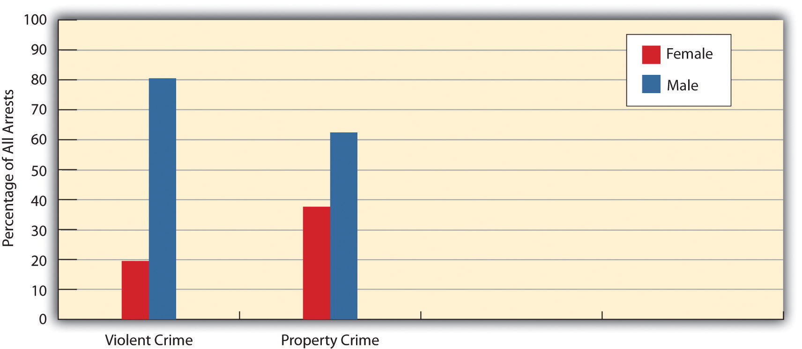
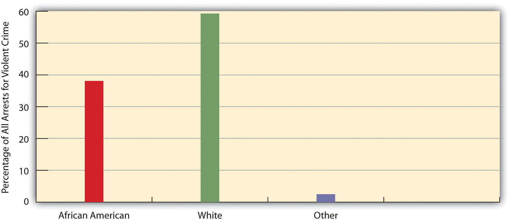

While people from all walks of life commit street crime, some people are still more likely than others to break the law because of their social backgrounds. These social backgrounds include their gender, age, social class, urban/rural residence, and race and ethnicity. Despite their inaccuracies, the three data sources discussed in the first section of this chapter all provide a similar picture of what kinds of people, in terms of their social backgrounds, are more or less likely to commit street crime. We briefly discuss each background in turn.
Simply put, males commit much more crime than females. In UCR data, men comprise about 81 percent of all arrests for violent crime and about 63 percent of all arrests for property crime. (See Figure 8.3 "Gender and Arrest (Percentage of All Arrests)".) In the NCVS, victims report that males commit most of the violent crimes they experienced, and self-report studies find that males far outpace females in the commission of serious street offenses. When it comes to breaking the law, crime is a man’s world.
Figure 8.3 Gender and Arrest (Percentage of All Arrests)
Source: Data from Federal Bureau of Investigation. (2011). Crime in the United States, 2010. Washington, DC: Author.
The key question is why such a large gender difference exists. Some scholars attribute this difference to biological differences between the sexes, but most criminologists attribute it to sociological factors. One of these is gender role socialization: Despite greater recognition of gender roles, we continue to raise our boys to be assertive and aggressive, while we raise our girls to be gentle and nurturing (Lindsey, 2011).Lindsey, L. L. (2011). Gender roles: A sociological perspective (5th ed.). Upper Saddle River, NJ: Prentice Hall. Such gender socialization has many effects, and one of these is a large gender difference in criminal behavior. A second factor is opportunity. Studies find that parents watch their daughters more closely than they watch their sons, who are allowed to stay out later at night and thus have more opportunity to break the law.
Age also makes a difference in criminal behavior: Offending rates are highest in the late teens and early twenties and decline thereafter. Accordingly, people in the 15–24 age range account for about 40 percent of all arrests even though they comprise only about 14 percent of the population.
Several factors again seem to account for this pattern (Shoemaker, 2010).Shoemaker, D. J. (2010). Theories of delinquency: An examination of explanations of delinquent behavior (6th ed.). New York, NY: Oxford University Press. First, peer relationships matter more during this time of one’s life than later, and peers are also more likely during this period than later to be offenders themselves. For both reasons, our peer relationships during our teens and early twenties are more likely than those in our later years to draw us into crime. Second, adolescents and young adults are more likely than older adults to lack full-time jobs; for this reason, they are more likely to need money and thus to commit offenses to obtain money and other possessions. Third, as we age out of our early twenties, our ties to conventional society increase: Many people marry, have children, and begin full-time employment, though not necessarily in that order. These events and bonds increase our stakes in conformity, to use some social science jargon, and thus reduce our desire to break the law (Laub, Sampson, & Sweeten, 2006).Laub, J. H., Sampson, R. J., & Sweeten, G. A. (2006). Assessing Sampson and Laub’s life-course theory of crime. In F. T. Cullen (Ed.), Taking stock: The status of criminological theory (Vol. 15, pp. 313–333). New Brunswick, NJ: Transaction.
Findings on social class differences in crime are less clear than they are for gender or age differences. Arrests statistics and much research indicate that poor people are much more likely than wealthier people to commit street crime. However, some scholars attribute the greater arrests of poor people to social class bias against them. Despite this possibility, most criminologists would probably agree that social class differences in criminal offending are “unmistakable” (Harris & Shaw, 2000, p. 138).Harris, A. R., & Shaw, J. A. W. (2000). Looking for patterns: Race, class, and crime. In J. F.Sheley (Ed.), Criminology: A contemporary handbook (3rd ed., pp. 129–163). Belmont, CA: Wadsworth. Reflecting this conclusion, one sociologist has even noted, with tongue only partly in cheek, that social scientists know they should not “stroll the streets at night in certain parts of town or even to park there” and that areas of cities that frighten them are “not upper-income neighborhoods” (Stark, 1987, p. 894).Stark, R. (1987). Deviant places: A theory of the ecology of crime. Criminology, 25, 893–911. Thus social class does seem to be associated with street crime, with poor individuals doing more than their fair share.
Explanations of this relationship center on the effects of poverty, which, as the next section will discuss further, is said to produce anger, frustration, and economic need and to be associated with a need for respect and with poor parenting skills and other problems that make children more likely to commit antisocial behavior when they reach adolescence and beyond. These effects combine to lead poor people to be more likely than wealthier people to commit street crime, even if it is true that most poor people do not commit street crime at all.
Although the poor are more likely than the wealthy to commit street crime, it is also true that the wealthy are much more likely than the poor to commit white-collar crime, which, as argued earlier, can be much more harmful than street crime. If we consider both street crime and white-collar crime, then there does not appear to be a social class-crime relationship, since the poor have higher rates of the former and the wealthy have higher rates of the latter.
Where we live also makes a difference for our likelihood of committing crime. We saw earlier that big cities have a much higher homicide rate than small towns. This trend exists for violent crime and property crime more generally. Urban areas have high crime rates in part because they are poor, but poverty by itself does not completely explain the urban-rural difference in crime, since many rural areas are poor as well. A key factor that explains the higher crime rates of urban areas is their greater population density (Stark 1987).Stark, R. (1987). Deviant places: A theory of the ecology of crime. Criminology, 25, 893–911. When many people live close together, they come into contact with one another more often. This fact means that teenagers and young adults have more peers to influence them to commit crime, and it also means that potential criminals have more targets (people and homes) for their criminal activity. Urban areas also have many bars, convenience stores, and other businesses that can become targets for potential criminals, and bars, taverns, and other settings for drinking can obviously become settings where tempers flare and violence ensues.
In discussing who commits crime, any discussion of race and ethnicity is bound to arouse controversy because of the possibility of racial and ethnic stereotyping. But if we can say that men and younger people have relatively high crime rates without necessarily sounding biased against individuals who are male or younger, then it should be possible to acknowledge that certain racial and ethnic groups have higher crime rates without sounding biased against them.
Keeping this in mind, race and ethnicity do seem to be related to criminal offending. In particular, much research finds that African Americans and Latinos have higher rates of street crime than non-Latino whites. For example, although African Americans comprise about 13 percent of the US population, they account for about 39 percent of all arrests for violent crime (see Figure 8.4 "Race and Arrest for Violent Crime (Percentage of All Violent Crime Arrests)").
Figure 8.4 Race and Arrest for Violent Crime (Percentage of All Violent Crime Arrests)
Source: Data from Federal Bureau of Investigation. (2011). Crime in the United States, 2010. Washington, DC: Author.
Latinos also have higher crime rates than non-Latino whites, but lower rates than those for African Americans. Although racial and ethnic bias by the criminal justice system may account for some of these racial/ethnic differences in offending, most criminologists agree that such differences do in fact exist for serious street crimes (Walker, Spohn, & DeLone, 2012).Walker, S., Spohn, C., & DeLone, M. (2012). The color of justice: Race, ethnicity, and crime in America (5th ed.). Belmont, CA: Wadsworth.
Why do these differences exist? A racist explanation would attribute them to biological inferiority of the groups, African Americans and Latinos, with the relatively high rates of offending. Such explanations were popular several generations ago but fortunately lost favor as time passed and attitudes changed. Today, scholars attribute racial/ethnic differences in offending to several sociological factors (Unnever & Gabbidon, 2011).Unnever, J. D., & Gabbidon, S. L. (2011). A theory of African American offending: Race, racism, and crime. New York, NY: Routledge. First, African Americans and Latinos are much poorer than whites on the average, and poverty contributes to higher crime rates. Second, they are also more likely to live in urban areas, which, as we have seen, also contribute to higher crime rates. Third, the racial and ethnic discrimination they experience leads to anger and frustration that in turn can promote criminal behavior. Although there is less research on Native Americans’ criminality, they, too, appear to have higher crime rates than whites because of their much greater poverty and experience of racial discrimination (McCarthy & Hagan, 2003).McCarthy, B., & Hagan, J. (2003). Sanction effects, violence, and native North American street youth. In D. F. Hawkins (Ed.), Violent crime: Assessing race and ethnic differences (pp. 117–137). Cambridge: Cambridge University Press.
In appreciating racial/ethnic differences in street crime rates, it is important to keep in mind that whites commit most white-collar crime, and especially corporate crime, as it is white people who lead and manage our many corporations. Just as social class affects the type of crime that people do, so do race and ethnicity. Wealthy, white people commit much crime, but it is white-collar crime they tend to commit, not street crime.